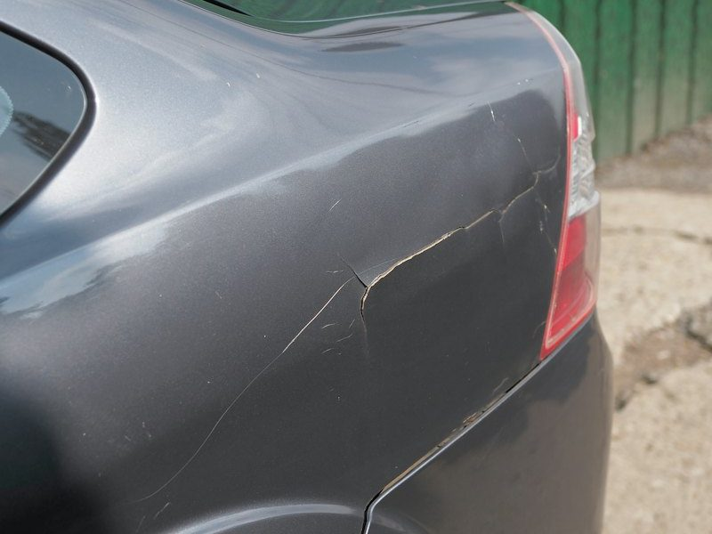

Kfz-Gutachter in Mönchengladbach
Ihr Sachverständiger: Cihan Es
Die Versicherung des Unfallgegners will ihren eigenen Gutachter schicken? Sie müssen nicht zustimmen und dürfen jeden qualifizierten Gutachter beauftragen. Cihan Es begutachtet Ihr Fahrzeug in Ihrem Auftrag, dort, wo es steht, oder auf der Hebebühne an der Karstraße 25.
Mo bis Fr 8 bis 18 Uhr, Sa 9 bis 14 Uhr. Außerhalb dieser Zeiten: Fotos per WhatsApp oder Rückruf anfordern.
Unverschuldeter Unfall, Schaden über etwa 750 Euro: Das Gutachten zahlt in der Regel die gegnerische Versicherung. Wer zahlt in welchem Fall?
- Besichtigung mit HebebühneKarstraße 25
41068 Mönchengladbach - Büro und Post, RheydtDahlener Straße 286
41239 Mönchengladbach - Anfahrt zu beiden Adressen
Die Versicherung vom Gegner hat angerufen
Viele Versicherer melden sich schon am Tag nach dem Unfall und bieten an, alles zu regeln: Gutachter, Werkstatt, Mietwagen. Das ist erlaubt, Sie müssen aber nicht zustimmen.
Der Gutachter der Versicherung arbeitet in deren Auftrag. Sie dürfen einen qualifizierten Gutachter Ihrer Wahl beauftragen (BGH, VI ZR 225/13); bei unverschuldetem Unfall zahlt ihn in der Regel die gegnerische Versicherung, bei kleinen Schäden oft nicht. Sagen Sie am Telefon nichts zu, bevor Sie wissen, wie groß Ihr Schaden ist.
Ihr Recht auf einen eigenen GutachterDirekt nach dem Unfall: Die fünf Schritte an der Unfallstelle
Wer zahlt das Gutachten?
- Der Gegner ist allein schuld
- In der Regel zahlt seine Haftpflichtversicherung das Gutachten als Teil des Schadens.
- Teilschuld
- Die gegnerische Versicherung zahlt anteilig, den Rest tragen Sie.
- Selbst verschuldet, Hagel, Wild
- Das ist ein Fall für Ihre Kasko. Ein Gutachten, das Sie selbst beauftragen, zahlt sie nur mit ihrer vorherigen Zustimmung. Fragen Sie dort zuerst.
- Kleiner Schaden
- Bei Bagatellschäden erstattet die Versicherung die Gutachterkosten meist nicht. Dann reicht oft ein Kostenvoranschlag.
Ob sich ein Gutachten in Ihrem Fall lohnt, klären Sie am Telefon, bevor Kosten entstehen.
Kosten und Honorar im EinzelnenSo läuft es ab

- Anruf
- Sie schildern, was passiert ist, und vereinbaren den Termin für die Besichtigung. Fotos per WhatsApp helfen bei der ersten Einschätzung.
- Besichtigung
- Cihan Es besichtigt Ihr Fahrzeug dort, wo es steht, oder auf der Hebebühne an der Karstraße 25. Auf der Hebebühne zeigen sich auch Schäden an Unterboden, Achsen und Fahrwerk.
- Gutachten
- Sie erhalten das Gutachten schriftlich. Darin stehen die Reparaturkosten, die Wertminderung, falls sie anfällt, die Ausfalldauer, bei Totalschaden Wiederbeschaffungswert und Restwert, dazu Fotos aller Schäden. Bei Totalschaden dauert es länger, weil Restwertangebote eingeholt werden.
- Versand
- Auf Wunsch geht das Gutachten direkt an die gegnerische Versicherung.
Wie lange es dauert, erfahren Sie beim ersten Gespräch. Ein Kostenvoranschlag enthält weder Wertminderung noch Ausfalldauer; ein Gutachten prüft beides.
Besichtigung und Gutachten im EinzelnenÜber Cihan Es
Cihan Es ist Kfz-Sachverständiger für Unfallschäden in Mönchengladbach. Er besichtigt Ihr Fahrzeug und erstellt das Gutachten. Reparaturen führt er nicht aus.
Das Büro liegt an der Dahlener Straße 286 in Rheydt. Besichtigt wird bei Ihnen vor Ort oder auf der Hebebühne an der Karstraße 25. Die Hebebühne steht in einer eigenständigen Werkstatt. Reparieren lassen Sie, wo Sie wollen.
Kontakt und AnfahrtEinsatzgebiet
Cihan Es besichtigt in Mönchengladbach mit allen Stadtteilen, dort, wo Ihr Fahrzeug steht. Ebenso in Viersen, Willich, Korschenbroich, Neuss, Kaarst und Grevenbroich.
Einsatzgebiet im EinzelnenHäufige Fragen nach einem Unfall
Muss ich den Gutachter der Versicherung nehmen?
Nein. Sie dürfen einen qualifizierten Gutachter Ihrer Wahl beauftragen (BGH, VI ZR 225/13). Der Gutachter der Versicherung arbeitet in deren Auftrag. Ein Gutachten hält den Schaden vollständig und nachprüfbar fest: Reparatur, Wertminderung, Ausfalldauer.
Gutachten oder Kostenvoranschlag?
Bei kleinen Schäden erstattet die Versicherung die Gutachterkosten meist nicht; dann reicht oft ein Kostenvoranschlag. Entscheidend ist, wie groß der Schaden aussah, als Sie den Gutachter beauftragt haben, nicht die spätere Endsumme. Verdeckte Schäden hinter der Stoßstange sieht man von außen nicht. Wo die Grenze liegt.
Wie schnell bekomme ich einen Termin und das Gutachten?
Den Termin vereinbaren Sie am Telefon. Wie lange es bis zum fertigen Gutachten dauert, hängt vom Schaden ab und wird beim ersten Gespräch besprochen. Bei Totalschaden dauert es länger, weil Restwertangebote eingeholt werden.
Ist das Büro auch abends und am Wochenende erreichbar?
Telefonisch Mo bis Fr 8 bis 18 Uhr und Sa 9 bis 14 Uhr. Außerhalb dieser Zeiten schicken Sie Fotos per WhatsApp oder hinterlassen Ihre Nummer im Formular; die Antwort kommt Mo bis Fr ab 8 Uhr, Sa ab 9 Uhr. Was Sie abends und am Wochenende tun können.
Mein Auto fährt nicht mehr. Was nun?
Besichtigt wird dort, wo das Fahrzeug steht: zu Hause, beim Arbeitgeber oder in der Werkstatt Ihrer Wahl. Steht es beim Abschleppdienst, kostet jeder Tag Standgeld. Lassen Sie es zügig besichtigen oder umstellen; angemessene Abschlepp- und Standkosten gehören bei unverschuldetem Unfall in der Regel zum Schaden.
Was ist bei Teilschuld oder Kaskoschaden?
Bei Teilschuld zahlt die gegnerische Versicherung die Gutachterkosten anteilig, den Rest tragen Sie. Bei Kaskoschäden (Hagel, Wild, selbst verschuldet) zahlt Ihre Kasko ein Gutachten, das Sie selbst beauftragen, nur mit ihrer vorherigen Zustimmung. Fragen Sie dort zuerst. Zahlt die Kasko nicht, erfahren Sie das Honorar vor der Besichtigung.
Kontakt und Rückruf
Sie können gerade nicht telefonieren? Hinterlassen Sie Ihre Nummer. Der Rückruf kommt Mo bis Fr ab 8 Uhr, Sa ab 9 Uhr.
- Telefon02161 688 86 91Mo bis Fr 8 bis 18 Uhr, Sa 9 bis 14 Uhr
- WhatsApp0177 19 47 271Fotos zur ersten Einschätzung. Die erste Einschätzung kostet nichts. Bitte nur Ihr eigenes Fahrzeug fotografieren.
- E-Mailinfo@kfz-gutachten-es.de